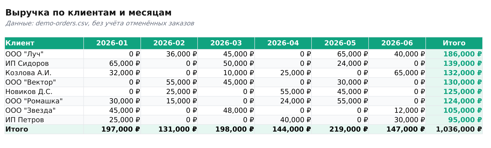

Из выгрузки (Excel/CSV из CRM, 1С или банка) — ответы на главные вопросы о продажах, сводная таблица в Excel и красивый HTML-отчёт с графиками. Задачи агенту — обычным русским языком, без единой формулы.
Для каждого, у кого есть хоть одна выгрузка данных: заказы, платежи, остатки. Обычный путь — час в Excel с ВПР и сводными (или «попрошу бухгалтера на неделе»). Путь этого урока — 15 минут диалога с агентом. Заодно поймёшь главный навык работы с ИИ: качество ответа зависит от точности вопроса.
Из одной выгрузки — три результата. Дальше в уроке пройдём все три шага.
ИИ-проекты\Разбор документов), запусти там агента.Задавай агенту по одному, смотри, что возвращается:
Иллюстрация на учебных данных. На твоей выгрузке цифры и имена будут другими — механика та же.
На учебных данных получится примерно так: 30 заказов; топ-клиент ООО «Луч» со 186 000 ₽; выручка скачет от 131 000 ₽ в феврале до 219 000 ₽ в мае; два клиента «заснули» больше чем на месяц; средний чек 38 370 ₽.
Учебный момент. Заметь, как формулировка меняет ответ. «Какой средний чек?» — агент сам решит, включать ли отменённые заказы (и честно скажет, что решил). «Какой средний чек по оплаченным заказам?» — решишь ты. Оба ответа верные, но второй — тот, что нужен тебе. Агент — как толковый помощник: чем точнее задача, тем меньше сюрпризов.
Попроси:
Сделай сводную таблицу: выручка по клиентам и месяцам, с итогами. Отменённые не считай. Сохрани в Excel-файл — оформи прилично: цветную шапку, формат сумм с ₽, итоговую строку жирным.
Если не попросить про оформление отдельно — агент чаще всего сохранит голую таблицу без единой заливки, как сырой экспорт. Красота в Excel не подразумевается по умолчанию, её нужно явно заказать — как и в любой другой задаче.
Агент напишет и выполнит скрипт (спросит разрешение — теперь ты знаешь, что это), в папке появится файл. Открой его обычным Excel и проверь пару цифр руками — привычка сверять результат должна появиться раньше, чем безоговорочное доверие.

Это реальный результат на учебных данных — не макет. Попроси «оформи красиво: цветную шапку, жирный итог, формат сумм с ₽» — и получишь так же, а не голую таблицу без единой заливки.
Скачать файл целиком: svodnaya-vyruchka.xlsx.
Попроси:
Собери из этих данных отчёт по продажам одной HTML-страницей: карточки с ключевыми цифрами, график выручки по месяцам, топ клиентов, разбивка заказов по статусам и таблица всех заказов. Оформи минималистично: белый фон, зелёный акцент.
Получится страница, которую не стыдно открыть с телефона и показать партнёру. Это обычный файл — его можно отправить в мессенджере, положить на сайт или открыть локально двойным кликом.
Живой пример на учебных данных: otchet-po-prodazham.html — открывается прямо в браузере, в том числе с телефона.
Ответь себе на три вопроса (лучше письменно):
Третий список — самый ценный: это твой личный учебник постановки задач.
| Симптом | Причина | Решение |
|---|---|---|
| Агент «не видит» выгрузку | Запущен не в той папке | cd в папку с файлом, перезапусти (урок М0-04) |
| Цифры в ответе не сходятся с Excel | Агент включил/исключил отменённые не так, как ты ждал | Уточни в вопросе: «считай только оплаченные». Спроси: «как ты считал?» — агент объяснит |
| Кракозябры вместо русских букв | Кодировка выгрузки из 1С (Windows-1251) | Скажи агенту: «файл в кодировке Windows-1251, переконвертируй в UTF-8» |
| В отчёте не рисуются графики | Нет интернета: библиотека графиков грузится с CDN | Открой файл при включённом интернете — или попроси агента «встрой библиотеку графиков прямо в файл» |
| Загрузил выгрузку с ФИО и телефонами | Забыл про гигиену данных | Правило из М0-04: сначала обезличить, потом загружать |
Возьми вторую выгрузку из своего бизнеса (другой период или другой источник — банк вместо CRM) и повтори все три шага без подглядывания в урок. Запиши шестой и седьмой вопросы, которые захотелось задать данным, — они пригодятся в уроке про скиллы.
Практикум сначала прошли на учебных данных — реальная выгрузка будет позже, и урок дополнится живыми затыками. Уже одно всплыло: в плане практикума была «сводная по менеджерам», а в данных колонки «менеджер» не оказалось — агент честно предупредил и предложил сводную по клиентам. Мораль: агент работает с теми колонками, что есть, а не с теми, что ты помнишь по старой выгрузке. Начинай с вопроса «какие колонки есть в файле?».